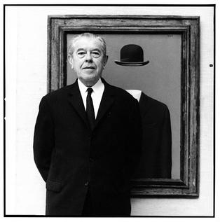

René Magritte
21 Novembre 1898 – 15 Août 1967
Quelques oeuvres de cet artiste:
Les Amants
La Trahison des images
Le Faux Miroir
Il est un peintre belge et l'un des plus grands artistes du courant surréaliste.
Il connaît une enfance difficile, sa mère se suicidant en 1912. Son père,
René et ses deux frères s'installent alors à Charleroi, où les études du peintre en devenir ne sont pas brillantes.
Magritte découvre le cubisme grâce à ses nouveaux amis. En 1920, il retrouve par hasard Georgette Berger au jardin botanique de Bruxelles.
Ils se marient à l'été 1922.